Relation between Source Excitation and Far-Field Pattern¶
Many students either dislike or afraid of Electromagnetic theory! Obviously, the reason is the mathematical complexity involved in the EM theory. At the same time, nobody has that much trouble with subjects such as signal processing, communication theory, etc. But, if observed closely, the fundamental theory behind all these subjects is nothing but the Fourier analysis. In fact, Fourier analysis plays crucial role in understanding many areas of science and engineering.
So, it is the authors’ opinion that if the books on antenna theory starts with a slightly different approach using Fourier analysis as the starting point, then the learning process becomes easier and more fun. In this brief introductory article, we use this approach to explain the antenna theory (and of course, array antenna theory too).
 .
.Vector Potentials and Helmholtz Wave Equations¶
Assuming the entire system is linear, any source can be separated into
electric and magnetic currents (sources). The vector potentials  and
and  corresponding to these given electric and magnetic currents
corresponding to these given electric and magnetic currents
 and
and  are given as
are given as
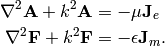
The above equations are derived from the Maxwell’s equations. Solutions to the above inhomogeneous Hemlholtz equations, are given as
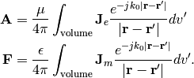
And of course, the relation between vector potentials and electric and magnetic fields are given as
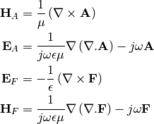
where and
 . For further details,
please refer to (page.135, [Balanis]).
. For further details,
please refer to (page.135, [Balanis]).
Far-field Components¶
In rectangular co-ordinate system, when 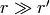, the term 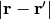 can be approximated as

So, far-field vector potentials are given as

From the above equations, it is evident that
and  forms Fourier transform pairs.
In comparison to the signal processing terminology, 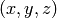 and
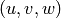 are analogous to time and frequency , respectively.
forms Fourier transform pairs.
In comparison to the signal processing terminology, 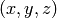 and
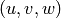 are analogous to time and frequency , respectively.
Also, far-field electric and magnetic field components can be approximated as
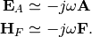
The far-field components and  are related
to the above components as 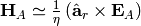
and
are related
to the above components as 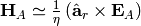
and  ,
where
,
where  is the free space wave impedance.
is the free space wave impedance.
Far-field Green’s Functions of Infinitesimal Dipoles¶
Now, a simple example will be considered. This example deals with evaluation of the far-field components corresponding to a infinitesimal electric dipole placed at the origin and oriented along the 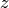-axis. The corresponding vector potential is given as

Converting the above equation into spherical co-ordinate system gives
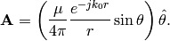
In deriving the above equation, radial component of the vector potential is neglected. Finally, far-field electric field is given as

Similar far-field Green’s functions corresponding to infinitesimal dipoles oriented along various directions are given below.
Think beyond the Visible Space!¶
From a end user’s point of view, visible space is the only meaningful space. But, an antenna engineer must think beyond this visible space (this is especially true in the case of array design and analysis). Understanding the entire - domain